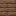

桑木栅栏门
River Fence Gate
英文名: River Fence Gate命名空间 ID:
upgrade_aquatic:river_fence_gate类型: 方块所属模组: Upgrade Aquatic资料检索: 🔎 在 MC百科 搜索「桑木栅栏门」所属标签
合成获得 (2)
有序合成Upgrade Aquatic


原始 JSON
{
"type": "minecraft:crafting_shaped",
"category": "redstone",
"group": "wooden_fence_gate",
"key": {
"#": {
"item": "minecraft:stick"
},
"W": {
"item": "upgrade_aquatic:river_planks"
}
},
"pattern": [
"#W#",
"#W#"
],
"result": {
"count": 1,
"id": "upgrade_aquatic:river_fence_gate"
}
}woodworks:sawmillUpgrade Aquatic
原始 JSON
{
"neoforge:conditions": [
{
"type": "blueprint:and",
"values": [
{
"type": "neoforge:mod_loaded",
"modid": "woodworks"
},
{
"type": "woodworks:config",
"value": "sawmill"
}
]
}
],
"type": "woodworks:sawmill",
"ingredient": {
"tag": "upgrade_aquatic:river_logs"
},
"result": {
"count": 1,
"id": "upgrade_aquatic:river_fence_gate"
}
}